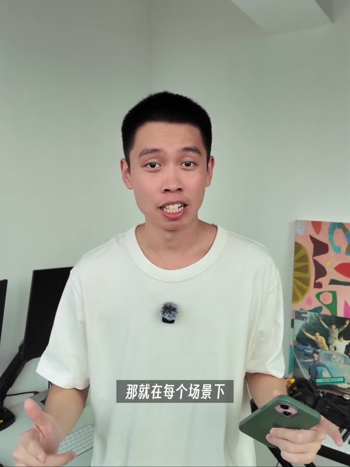
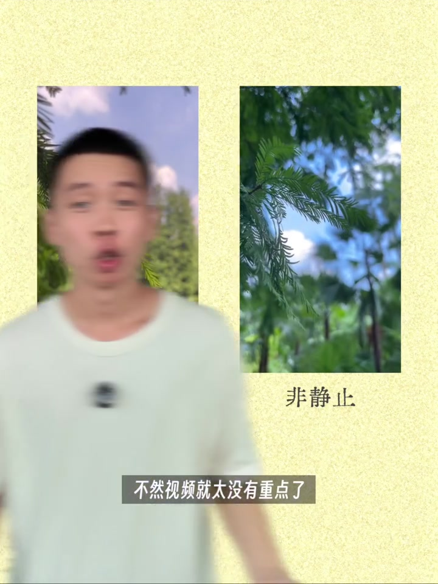
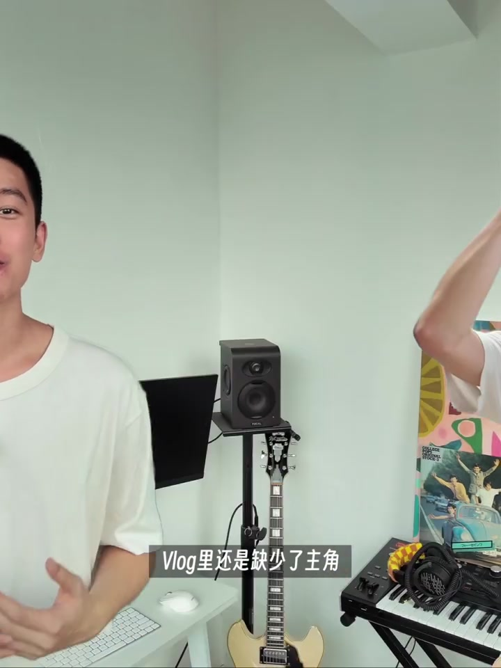
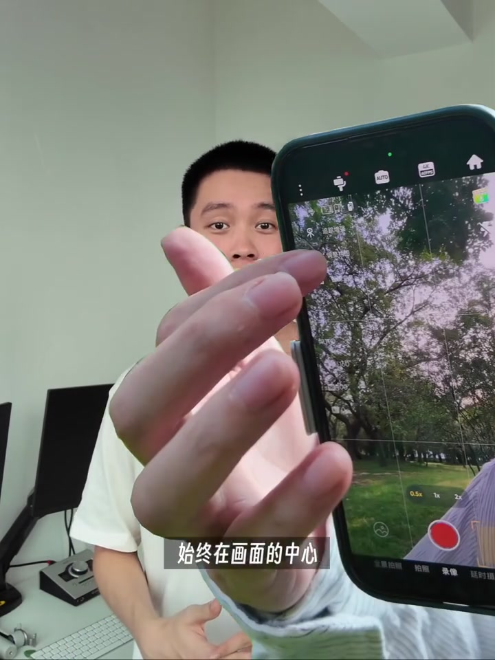
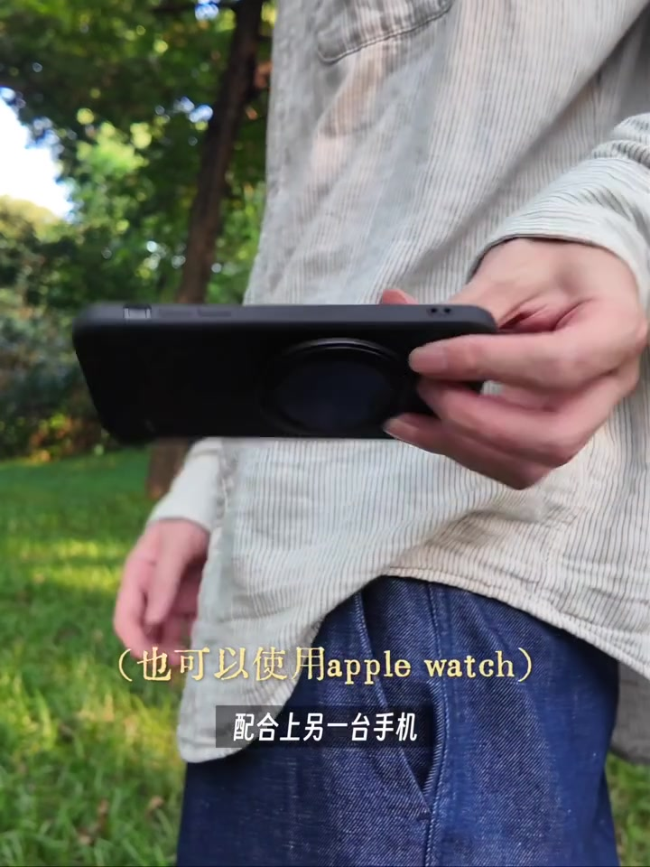

内容要点
[00:00] 這,是你最近拍攝的無Log素材
[00:02] 性質衝衝的舉起手機就一頓亂拍
[00:04] 回來發現273個視頻
[00:06] 根本不知道該從哪裡開始見
[00:08] 出不了篇就算了
[00:09] 還嚴重影響了自己當時遊玩的心情
[00:12] 這時你想到另一種方法
[00:14] 既然不知道要拍什麼
[00:15] 那就在每個場景下
[00:16] 只記錄這四種畫面
[00:18] 場景空鏡
[00:19] 物品特寫
[00:20] 人物全景
[00:21] 人物靜景
[00:22] 在拍攝場景空鏡時
[00:23] 可以選擇使用固定拍攝
[00:25] 盡量保證畫面內的物體運動起來
[00:27] 不然視頻就太沒有重點了
[00:29] 同時也可以使用更有氛圍感的移動拍攝
[00:32] 為了保證畫面的穩定
[00:33] 我這裡使用了影視的Flow2 Pro
[00:35] 來拍攝一些慢慢橫移的畫面
[00:37] 又或者是使用自由撫養模式
[00:39] 拍攝升降的畫面
[00:41] 來增加畫面的電影感
[00:43] 但是如果只有空鏡的話
[00:44] Vlog裡還是缺少了主角
[00:46] 於是聰明的你有了更好的主意
[00:48] 可以把手機拿到比較遠的位置
[00:50] 來獲得人物圓景的畫面
[00:52] 這樣就能把環境和人物一起記錄下來
[00:54] 可以打開自帶的三角架和延長桿
[00:57] 選擇固定鏡頭拍攝
[00:58] 讓人物慢慢入畫
[01:00] 也可以使用影視Flow2 Pro自帶的追蹤功能
[01:03] 來拍攝一段人物移動的畫面
[01:05] 因為Flow2 Pro是市面上唯一搭載了
[01:07] Apple Ducky原生追蹤的手機雲台
[01:09] 所以可以直接在原相機
[01:11] 又或者是第三方相機App裡實現追蹤效果
[01:14] 哪怕是大範圍的環繞移動
[01:16] 也能保證水平360度的無死腳跟拍
[01:19] 完全不用擔心人物出鏡拍不到的問題
[01:21] 不管怎麼移動
[01:22] 都能保證人物始終在畫面的中心
[01:25] 如果想改變人物構圖
[01:26] 點擊智能美學構圖
[01:28] 就能調整跟蹤的位置
[01:30] 這時你發現
[01:31] 在配合上一些人物進行畫面
[01:32] 視覺的焦點就會更明確
[01:34] 讓自己的身體站滿拍攝畫面的一半
[01:37] 然後繼續做手上的事情就好
[01:39] 配合上另一台手機
[01:40] 使用副屏遙控的功能
[01:41] 就能更高效的把畫面調整成自己想要的樣子
[01:45] 同時在拍攝下一些物品特寫的鏡頭
[01:47] 不管是我們當下拿著的物品
[01:49] 還是環境裡的小東西
[01:50] 都可以把他們拍攝下來
[01:52] 來增加整個視頻的沉浸感
[01:54] 最後只需要把這四種畫面
[01:55] 進行上下隨機組合
[01:57] 再配上一首自己喜歡的音樂
[01:59] 整個視頻就會變得更有電影感
[02:01] 同時也會更有自己的風格
[02:27] 我第一次來咖啡廳
[02:30] 拍攝拍攝拍攝拍攝
[02:36] 坐在船上
[02:38] 我遇到我的自己的船長
[02:42] 還有另一個咖啡
[02:45] 我是美根探
[02:46] 謝謝觀看






